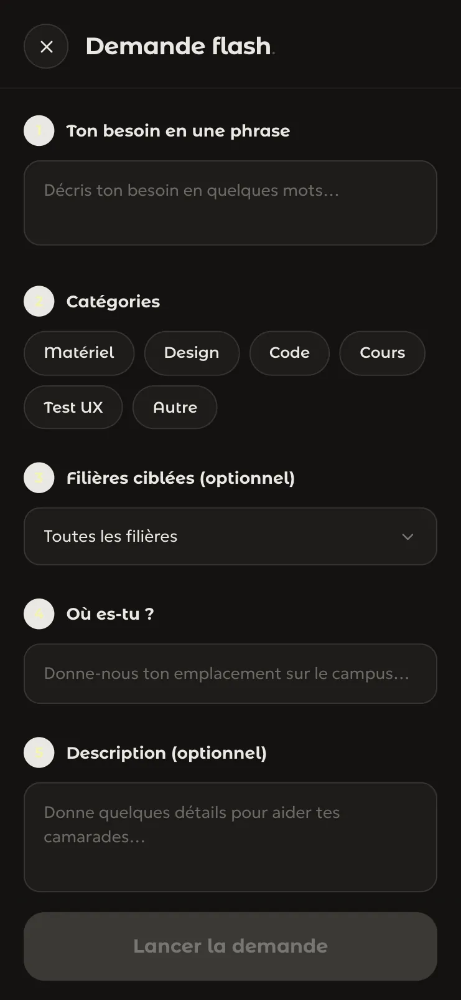
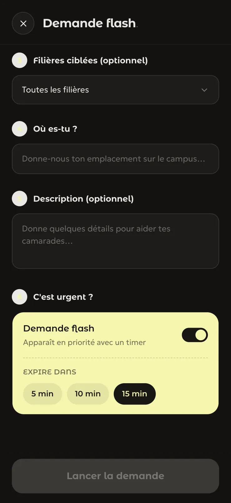
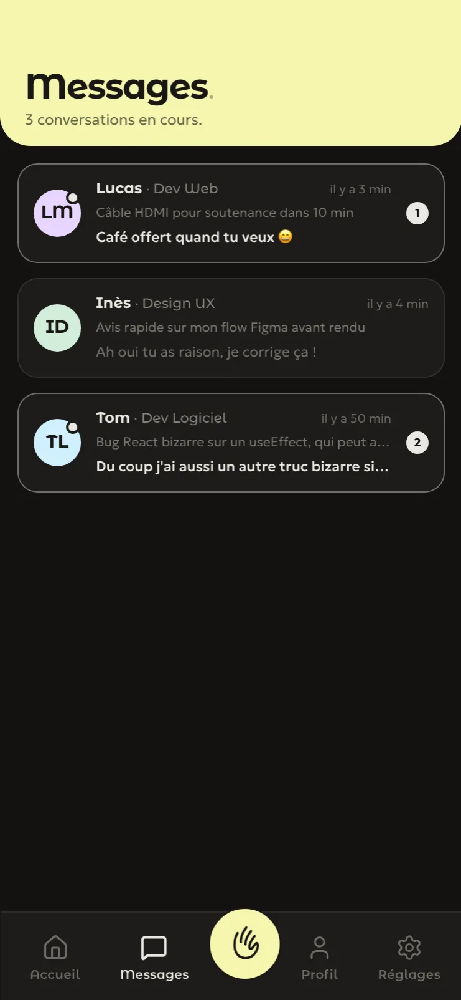
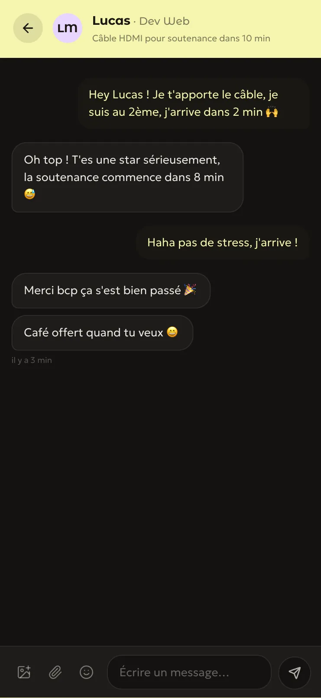
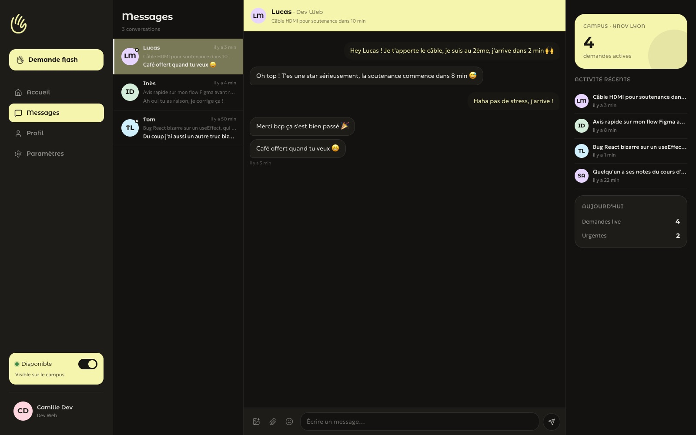

Relay
Web app d'entraide entre étudiants, module Y Boost, deuxième semestre 2025-2026 à Ynov. Projet de groupe, à quatre. Je me suis surtout occupé des demandes, des messages et du chat, avec un peu de design. L'app est en ligne et ouverte à tous, mais c'est un projet étudiant, sans vrais utilisateurs. Claude Code, React, TypeScript, Supabase, GitHub, Vercel.
Tester l'appLe projet
Qui a un chargeur ?
Le sujet était libre : une web app de notre choix. Nous sommes partis sur la cohésion entre étudiants. Prêter un chargeur ou un câble, trouver des testeurs pour un test utilisateur, demander un coup de main technique. Une demande tient en une phrase, une catégorie, une filière et un lieu sur le campus. La demande flash passe en priorité, avec un minuteur qui expire au bout de 5, 10 ou 15 minutes.


Du message au chat.
Des fonctionnalités ne se mettaient pas à jour à chaque fois : c'est ce que j'ai réglé. Dans mes pull requests, j'ai aussi mis les messages à la place des notifications et retiré les catégories du feed.


Plusieurs branches, un seul site.
Le vrai défi tenait à la méthode : quatre personnes en même temps sur le même projet, sans écrire le code à la main, avec Claude Code. C'était notre première fois sur GitHub et Vercel. Chacun avançait sur sa branche, et il fallait s'accorder sur le moment de pousser. Le jury a donné une très bonne note au projet.

Ce que j'en retiens.
À quatre, sur plusieurs branches et avec l'IA pour écrire le code, ce qui fait avancer un projet, c'est l'équipe.